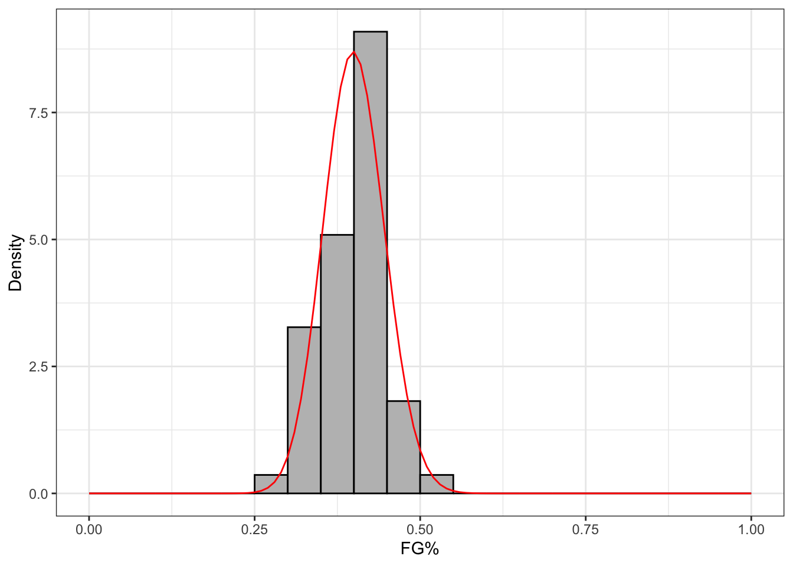
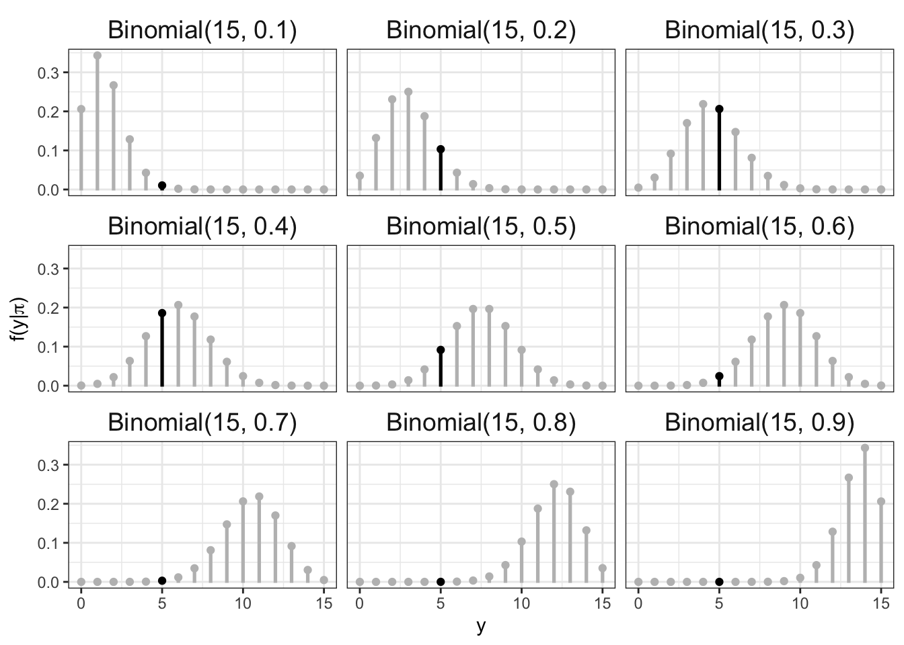
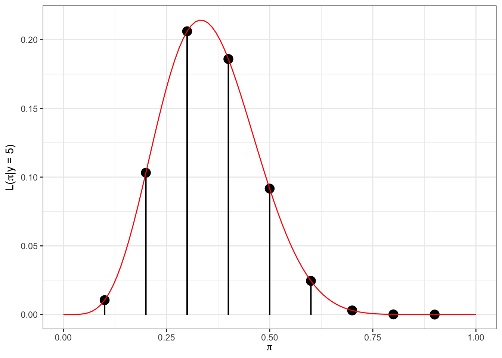
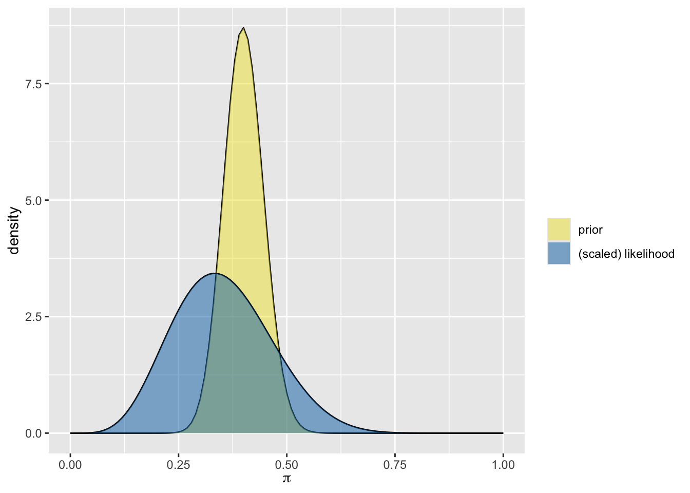
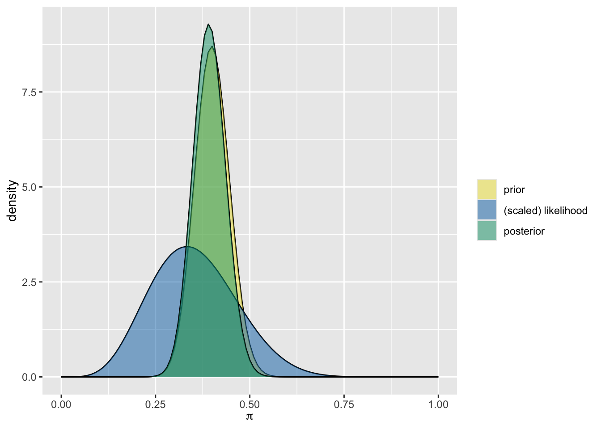
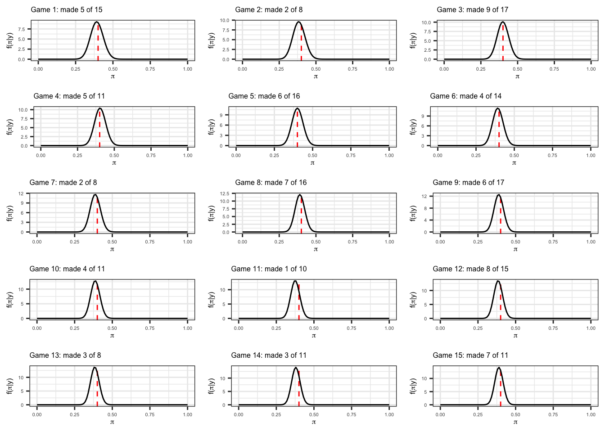

Lecture 12: Beta-Binomial model for Caitlin Clark’s rookie season
Introduction
The purpose of this demo is to walk through the Beta-Binomial Bayesian model for Caitlin Clark’s field goal percentage (FG%). We previously considered a discrete prior distribution for her probability of making a field goal \(\pi\). In this demo, we’re going to replace the discrete prior with a continuous Beta distribution. This will provide us with a foundational example of using conjugate priors in Bayesian statistics. Although we are only considering Caitlin Clark’s FG% in this demo, this type of example can be applied to a wide variety of problems in sports that are based on considering some type of success out of a number of trials.
We will use two datasets in this demo: (1) season statistics WNBA players during the 2024 season and (2) a game log of Caitlin Clark’s statistics in her rookie WNBA season. Both of these files were created using the init_clark_wnba_game_log.R script located in the demos/week6 folder on Canvas. The following code chunk reads in data (assuming they are in the correct directory):
library(tidyverse)wnba_player_stats <-read_csv(here::here("data/wnba_player_stats_2024.csv"))clark_game_log <-read_csv(here::here("data/caitlin_clark_wnba_game_log_2024.csv"))# View a preview of the datasets:wnba_player_stats
# A tibble: 158 × 8
athlete_id athlete_display_name school minutes fg_made fg_att position
<dbl> <chr> <chr> <dbl> <dbl> <dbl> <chr>
1 585 Diana Taurasi Mercury 1122 188 465 G
2 869 DeWanna Bonner Sun 1523 250 608 F
3 887 Sami Whitcomb Storm 613 72 209 G
4 918 Tina Charles Dream 1218 255 556 C
5 924 Alysha Clark Aces 1129 97 225 F
6 981 Courtney Vandersloot Liberty 862 103 234 G
7 1004 Sydney Colson Aces 275 28 71 G
8 1054 Tiffany Hayes Aces 843 132 263 G
9 1068 Nneka Ogwumike Storm 1275 270 536 F
10 2284331 Emma Cannon Aces 10 2 3 F
# ℹ 148 more rows
# ℹ 1 more variable: fg_percentage <dbl>
For our first step, we need a prior distribution for Clark’s probability of making a field goal, as denoted by parameter \(\pi\). As discussed in lecture, the Beta distribution is a popular choice for the prior distribution for a probability since it is bounded between 0 and 1. The Beta distribution is defined by shape parameters \(\alpha\) and \(\beta\), which (as the name states) determine the shape of the distribution - altering the mean, mode(s), and variance. In the Bayesian syntax, parameters for prior distributions are called hyperparameters. Thus, we need to determine our choice for the hyperparameters\(\alpha\) and \(\beta\) in this particular context to serve as the prior distribution for Caitlin Clark’s probability of making a field goal \(\pi\).
Although we could consider a purely subjective approach for this (i.e., choose values for \(\alpha\) and \(\beta\) based on prior belief about what the mean, mode, and variance are for \(\pi\)), in this example we will consider an empirical Bayes approach. Unlike traditional Bayesian statistics, which specifies a prior before observing any data, Empirical Bayes uses data to estimate the prior distribution’s hyperparameters.
In this example, we will use the wnba_player_stats table to estimate the hyperparameters for our Beta prior. However, the table currently includes a number of players with a relatively low number of field goal attempts (fg_att). For ease, we will only consider players with at least 100 FG attempts (excluding Caitlin Clark). Additionally, we will only consider Guard position players (indicated by position == "G") to only consider players that are similar to Clark.. The following code chunk filters the data and visualizes the distribution of FG%s (fg_percentage) for the considered players:
# First filter to the players of interestprior_data <- wnba_player_stats |>filter(fg_att >=100, position =="G", athlete_display_name !="Caitlin Clark")prior_data |>ggplot(aes(x = fg_percentage)) +geom_histogram(breaks =seq(0, 1, by =0.05),closed ="left", color ="black",fill ="gray") +labs(x ="FG%", y ="Number of players") +theme_bw()
prior_beta_model <- MASS::fitdistr(prior_data$fg_percentage, dbeta, # Need starting valuesstart =list(shape1 =5, shape2 =8))# Grab the values:prior_alpha_shape <- prior_beta_model$estimate[1]prior_beta_shape <- prior_beta_model$estimate[2]
These values correspond to:
prior_alpha_shape
shape1
45.88581
prior_beta_shape
shape2
68.68621
where shape1 is \(\alpha\) and shape2 is \(\beta\).
We can overlay this Beta density function based on these hyperparameters on top our histogram using stat_function():
prior_data |>ggplot(aes(x = fg_percentage)) +# Display on density scalegeom_histogram(aes(y =after_stat(density)),breaks =seq(0, 1, by =0.05),closed ="left", color ="black",fill ="gray") +# Now draw Beta distribution with these hyperparameters:stat_function(fun = dbeta, color ="red", xlim =c(0, 1),args =list(shape1 = prior_alpha_shape, shape2 = prior_beta_shape)) +labs(x ="FG%", y ="Density") +theme_bw()

Arguably, this does not seem like the best fit for the data… however, we’re going to be lazy about this for now and proceed with this choice for the prior.
Binomial Likelihood Function
We will use the Binomial model for Clark’s FG% (\(\pi\)) based on the number of shots she made in her WNBA debut on May 14th 2024, where she made 5 of 15 FG attempts. Unlike the intro_bayes.qmd demo, all values in the interval between 0 and 1 are possible - as reflected in the Beta prior distribution. For ease, we’ll make a similar visual to the intro demo that displays the Binomial probability for a grid of possible \(\pi\) values, with the observed \(y = 5\) out of \(n = 15\) shot attempts indicated in black:
# First create a table with values from 0 to 15 to indicate the number of # made field goals:field_goal_data <-tibble(made_fg =0:15, n_fg =15)# Now, loop over a vector of values for the potential pi:potential_pi <-seq(0.1, 0.9, by =0.1)# Create a stacked dataset containing the Binomial probability of observing# the number of made_fg given pi and n_fg for each of the three values of pi:field_goal_probs <-map_dfr(potential_pi,function(pi) { field_goal_data |>mutate(fg_pi = pi,binom_pmf =dbinom(made_fg, n_fg, fg_pi)) }) |># Add an indicator denoting the observed outcome:mutate(is_observed =ifelse(made_fg ==5, "yes", "no"))# And now create a plot displaying the probabilities for these choice of pisfield_goal_probs |># Make a new label using fg_pi:mutate(binom_label =paste0("Binomial(15, ", fg_pi, ")")) |>ggplot(aes(x = made_fg, y = binom_pmf, color = is_observed)) +geom_bar(aes(fill = is_observed), stat ="identity", width =0.1) +geom_point() +scale_color_manual(values =c("gray", "black")) +scale_fill_manual(values =c("gray", "black")) +facet_wrap(~binom_label, ncol =3) +labs(x ="y", y =expression(paste("f(y|", pi, ")"))) +theme_bw() +theme(legend.position ="none",strip.background =element_blank(),strip.text =element_text(size =14))

If we focus on the observed values with \(y = 5\), we can view the likelihood as a function of the choice of \(\pi\). Rather than view this likelihood only for the nine \(\pi\) values in the grid of plots above, we need to compute this across the continuous range of \(\pi\) values. The following code chunk displays this likelihood function across the full range of \(\pi\) (with the nine values from above highlighted in black):
field_goal_probs |># only use the rows for the observed outcomefilter(is_observed =="yes") |>ggplot(aes(x = fg_pi, y = binom_pmf)) +geom_bar(stat ="identity", width =0.001,color ="black", fill ="black") +geom_point(color ="black", size =4) +stat_function(fun = dbinom, color ="red", xlim =c(0, 1),args =list(x =5, size =15)) +labs(x =expression(pi), y =expression(paste("L(", pi, "|y = 5)"))) +theme_bw() +theme(strip.background =element_blank(),strip.text =element_text(size =14))

Beta Posterior
Since we now have the two pieces in place, prior and likelihood, we can arrive at the posterior distribution for Clark’s \(\pi\). Before arriving at the posterior, we’ll visualize the prior and a scaled version of the likelihood (so that it integrates to 1) together on the same plot using a convenient function from the bayesrules package:
library(bayesrules)plot_beta_binomial(alpha = prior_alpha_shape, beta = prior_beta_shape, y =5, n =15, prior =TRUE, likelihood =TRUE, posterior =FALSE)

As discussed in lecture, the use of a Beta prior with the Binomial likelihood results in a Beta posterior distribution for \(\pi\). This is because the Beta distribution is the conjugate prior for Binomial likelihood, meaning that the posterior is the same model family as the prior. The bayesrule package has a summarize_beta_binomial() function that returns the parameters for the prior and posterior under this form:
summarize_beta_binomial(prior_alpha_shape, prior_beta_shape,y =5, n =15)
model alpha beta mean mode var sd
1 prior 45.88581 68.68621 0.4004975 0.3987297 0.002077486 0.04557945
2 posterior 50.88581 78.68621 0.3927222 0.3910404 0.001826513 0.04273772
While we can manually display this posterior Beta distribution with the above \(\alpha\) and \(\beta\) parameters using dbeta() and stat_function(), the code chunk below displays the posterior with the prior and scaled likelihood using the convenient helper function from bayesrules:
plot_beta_binomial(alpha = prior_alpha_shape, beta = prior_beta_shape, y =5, n =15, # Now display the posteriorprior =TRUE, likelihood =TRUE, posterior =TRUE)

This connects back to the idea of pooling from multilevel models: although we observe data for Caitlin Clark’s shot attempts, we apply regularization and move towards the prior.
Sequential Bayesian Analysis
The Bayesian framework provides a way to incrementally update a posterior as new data arrives. We can start with a prior distribution, observe data to arrive at a posterior, then use this posterior as a new prior before repeating the process as we observe new data. For instance, we can use the game log of Caitlin Clark’s season to demonstrate this. Each row in clark_game_log corresponds to a single game. We can start with our Empirical Bayes prior from before, and update using the Beta-Binomial conjugate prior solution to arrive at the posterior for each game. The following code chunk performs this by updating the Clark game log table to include columns for the prior and posterior parameters:
# First sort the game log in ascending order:clark_game_log <-arrange(clark_game_log, game_date)# Initialize prior and posterior columns to use:clark_game_log <- clark_game_log |># Initialize the prior and posterior columns using the first gamemutate(prior_alpha = prior_alpha_shape,prior_beta = prior_beta_shape,posterior_alpha = prior_alpha + field_goals_made,posterior_beta = prior_beta + field_goals_attempted - field_goals_made)# Now use a for loop to modify the values for the parameters for all rows # starting at 2:for (i in2:nrow(clark_game_log)) {# Update the priors to be the posterior from the previous row: clark_game_log$prior_alpha[i] <- clark_game_log$posterior_alpha[i -1] clark_game_log$prior_beta[i] <- clark_game_log$posterior_beta[i -1]# And now update the posterior: clark_game_log$posterior_alpha[i] <- clark_game_log$prior_alpha[i] + clark_game_log$field_goals_made[i] clark_game_log$posterior_beta[i] <- clark_game_log$prior_beta[i] + clark_game_log$field_goals_attempted[i] - clark_game_log$field_goals_made[i]}
You can view the updating of the parameters from viewing the table:
The following code chunk draws the posterior across the first 15 games using the convenient cowplot package to display a list of plots (NOTE: I could not find a easier way to make this other than manually drawing separate layers for each posterior which would’ve been annoying). I am only displaying the first 15 games for ease, but we have a posterior after each of the 43 games that Clark played in. For reference, I’ve included a dashed red line indicating the average FG% of the players forming the prior.
x_lower <-0x_upper <-1# For ease, only displaying the first 15 games' posteriorsN_GAMES <-15game_plot_list <-lapply(1:N_GAMES, function(i) {tibble(x =c(x_lower, x_upper)) |>ggplot(aes(x = x)) +geom_vline(xintercept =mean(prior_data$fg_percentage),linetype ="dashed", color ="red") +scale_x_continuous(limits =c(x_lower, x_upper)) +stat_function(fun = dbeta, color ="black", xlim =c(0, 1),args =list(shape1 = clark_game_log$posterior_alpha[i], shape2 = clark_game_log$posterior_beta[i])) +labs(x =expression(pi), y =expression(paste("f(", pi, "|y)")),title =paste0("Game ", i, ": made ", clark_game_log$field_goals_made[i], " of ", clark_game_log$field_goals_attempted[i])) +theme_bw() +theme(axis.title =element_text(size =6),axis.text =element_text(size =4),plot.title =element_text(size =6)) })cowplot::plot_grid(plotlist = game_plot_list, ncol =3)

Now take a look at posterior parameters in final row of the game log: